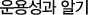

펀드투자 관리

펀드운용성과는 과거 운용결과를 평가하는데 의미가 있지 미래의 성과를 예측하는 지표로 사용하기에 적합하지 않다. 따라서 운용성과는 단순히 과거 성과만을 평가하는데 사용되어야 합니다.
펀드의 운용성과를 판단하는데 가장 중요한 고려요소는 수익률과 위험입니다.
- 수익률은 절대수익률보다는 상대수익률을 고려해야 합니다.
A펀드가 설정일로부터 현재까지 100%수익률을 올렸다고 했을 때 이것만으로 이 펀드가 훌륭한 수익률을 올렸다고 판단할 수 없습니다. 마찬가지로 펀드가 마이너스 수익률을 보인다고 해서 형편없는 수익률이라고 판단할 수 없는 것입니다.
A펀드가 100% 수익률을 올렸을 때 비교대상이 되는 벤치마크의 수익률이 150%였다면 이 펀드의 수익률이 저조하다고 판단할 수 있는 것입니다.
따라서 펀드의 수익률을 볼 때 절대 수치보다는 항상 비교대상인 벤치마크의 수익률과 비교해야 합니다.
- 수익률은 절대수익률보다는 상대수익률을 고려해야 합니다.
A펀드가 벤치마크보다 높은 수익률을 올렸는데 벤치마크보다 상당히 위험한 전략을 선택하여 수익률이 급변하고 상황이 잘못 흘렀을 경우 엄청난 손실을 가져올 수 있다면 벤치마크보다 좋은 성과를 보였다고 할 수 없는 것입니다.